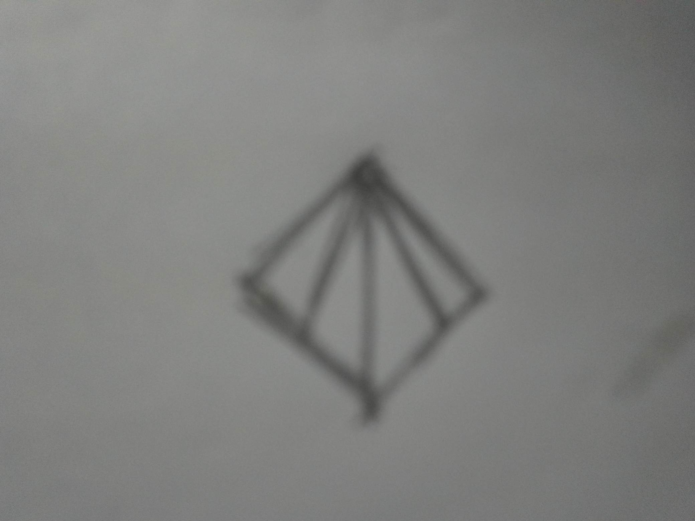
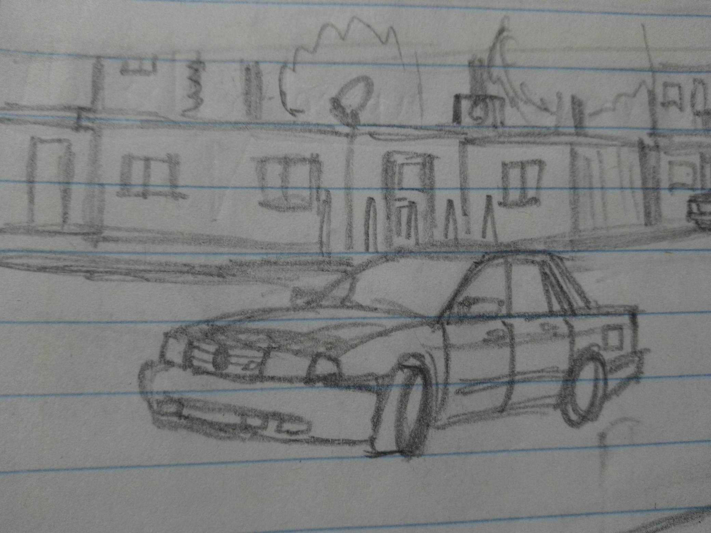

Kyushu motor Co. Ltd. es un fabricante japones ficticio inspirado en la marca automotriz japonesa nissan, perteneciente a la historieta de unusual driver, esta marca fue fundada en 1912 por Yoshijiro Aikamura y Robert Burgham.
La empresa empezó como un taller de reparación de telares automaticos, los cuales ganaron mucha popularidad en japón a principios del siglo XX, fundada por Yoshijiro Aikamura bajo el nombre de diamond service. En 1914 Robert Burgham, un ingeniero que emigró de estados unidos a japón en busca de nuevas oportunidades. Inicialmente Robert viajó a japón con su familia para trabajar en la industria aeronautica, pero al no encontrar empresas dedicadas a ellos, se unio a la ya mencionada anteriormente, Diamond Service. Aikamura tuvo la inquietud de fabricar un automovil luego de de ver que varias empresas lograron incursionar con éxito a aquella industria. Aikamura y Burgham lograron construir su primer vehiculo en 1916 y en 1917 sacaron su primer auto de pasajeros: el diamond azabu, nombrado así por la provincia en la que se encontraba la sede de Diamond service. Durante la decada de la decada de 1920 se dedicaron a crear pequeños vehiculos de pasajeros y camiones de carga a pequeña escala. En 1931 fundaron su primera fábrica en la prefectura de fukuoka, en la isla de kyushu, al sur de japón. Después de la guerra, en 1951 firmaron una alianza con la automotriz britanica Grommit Motor Company para producir modelos britanicos en el mercado japonés. fue en esta época que Robert se retiró de la compañia para trabajar con Tenkachi, una empresa de presición japonesa que producia maquinaria y motores de aviones. En 1957 la empresa cambia de nombre a Kyushu luego de fusionarse con Kumamoto Heavy Industries. otra fabricante japonés que producia automoviles. En 1961 deciden entrar a los mercados estadounidense y mexicano con la creacion de una fábrica en cuernavaca, morelos en el mismo año mencionado. los modelos producidos en cuernavaca eran exportados a estados unidos y el resto de latinoamerica. A finales de los años 90 Kyushu experimento una severa crisis financiera debido a la burbuja economica japonesa de los 90. en el inicio del nuevo milenio Kyushu fue comprada por la automotriz francesa Astro (renault) por aproximadamente 180 millones de dolares. esta compra represento la recuperacion economica del fabricante japones, pero supuso una gran pérdida de calidad en los autos de produccion, y diversas tomas de desiciones polemicas a lo largo de las decadas del 2000 y 2010.
| modelo | año de introdución | equivalente real | imagen |
| Tsukuba | 1982 | nissan tsuru |  |
| synthia | 1966 | silvia | |
| sunlight | 1950 | nissan skyline | |
| vista | 2013 | nissan sentra |
Usted se encuentra en la página 2
| Pagina 1 (historieta) | | Pagina 2 (kyushu) | | Pagina 3 |